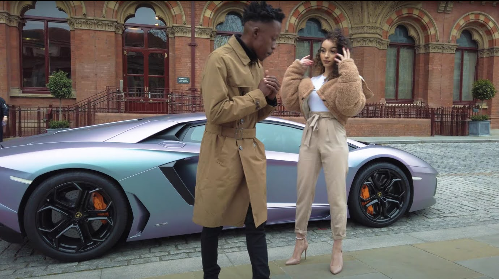

Division 01
Content
We shoot, edit and animate video and images for artists, brands and small businesses. Some of it is filmed on location, some is built with AI tools, and a lot of it is both.
You'll work directly with the people shooting and editing your film, from the first call to the final cut.
Visit the Content blog